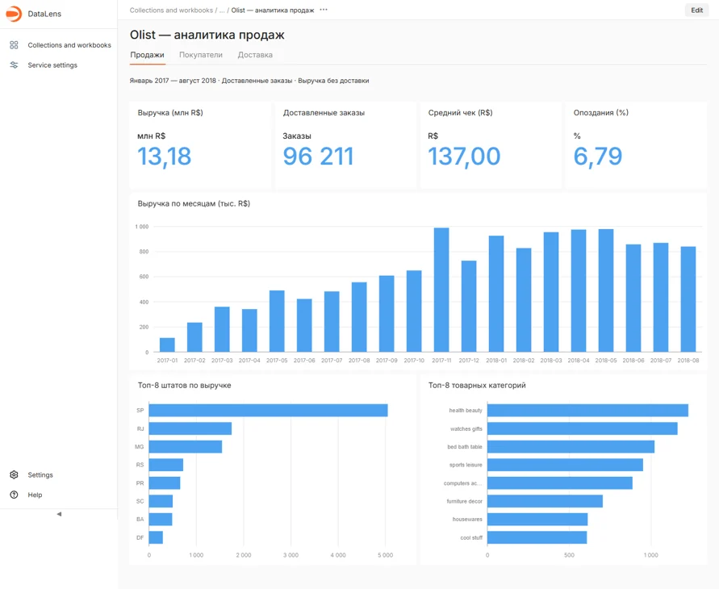
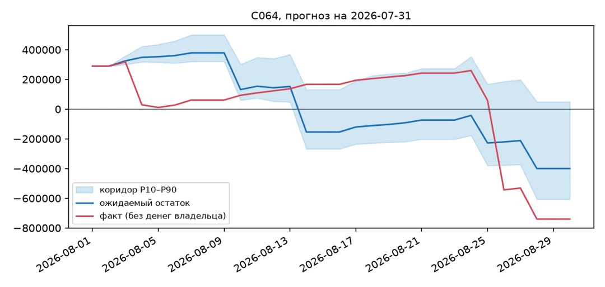

Анализ продаж
Маркетплейс Olist
Подготовил данные о 96 211 доставленных заказах. Изучил выручку, повторные покупки и связь задержек с оценками. Собрал дашборд в DataLens.
PostgreSQL · Pandas · DataLens
Открыть проект Olist на GitHubСтажёр / Junior аналитик данных
Анализирую продажи и транзакции, строю прогнозы и настраиваю сбор продуктовых событий.
Из проекта Olist
Доставка и оценки
Доля оценок 1–2 среди заказов с отзывом
Открыть исследование Olist
Анализ продаж
Подготовил данные о 96 211 доставленных заказах. Изучил выручку, повторные покупки и связь задержек с оценками. Собрал дашборд в DataLens.
PostgreSQL · Pandas · DataLens
Открыть проект Olist на GitHub
Кейс банка «Центр-инвест»
В командном проекте прогнозировали остаток малого бизнеса. Модель оценивает дату, сумму и вероятность кассового разрыва по 1 000 сценариям Монте-Карло.
Python · Статистическое моделирование
Открыть «Кассовый радар» на GitHub2-е место на хакатоне Сбера
В команде сделали сервис, который извлекает данные из фотографий документов, сверяет поля и даёт оператору исправить результат распознавания.
Python · PostgreSQL · Docker
Открыть анализатор на GitHubРаботаю над сайтами и приложениями для заказчиков из России и США. Настраиваю сбор данных о заявках, сделках и конверсиях.